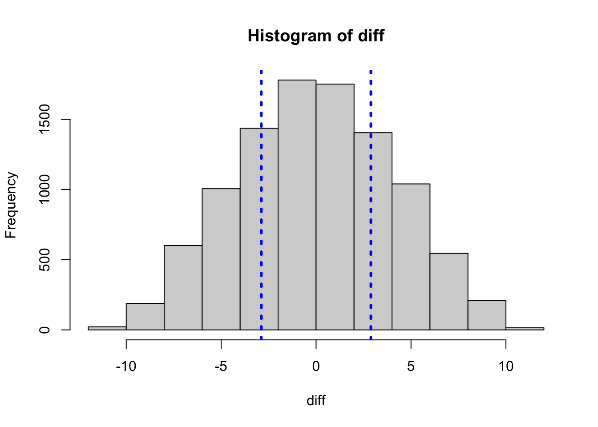

# Permutation test
set.seed(1234) #임의로 지정해줄 수 있음, 결과의 재현성
D<-2.886
m<-10000 # 반복시행횟수 or 10000
# 성조숙아
abnormal <- c(0, 14.6, 0, 2.48, 3.96,
6.06, 5.1, 5.13, 35.1, 4.96)
# 정상아
normal <- c(7.39, 2.54, 5.25, 17.74, 13.05,
28.79, 14.23, 3.83, 6.1, 7.33)
# data 합치기
data <- c(abnormal,normal)
sample<-matrix(0,nrow=m,ncol=20)
diff <- numeric(m)
mean.a <- numeric(m)
mean.b <- numeric(m)
for(i in 1:m) {
set.seed(i+123)
sample[i,]<-sample(data, 20, replace=F)
mean.a[i]=mean(sample[i,1:10])
mean.b[i]=mean(sample[i,11:20])
diff[i] <- mean.a[i]-mean.b[i]
}
hist(diff);abline(v=2.886,col="blue",lty=3,lwd=3);abline(v=-2.886,col="blue",lty=3,lwd=3)
aa <- ifelse(abs(diff)>2.886, 1, 0) # 평균의 차이가 2.886보다 큰 개수
mean(aa);sum(aa)[1] 0.5138[1] 5138sample <- t(sample)
diff <- round(diff, digits=3)
mean.a <- round(mean.a, digits=3)
mean.b <- round(mean.b, digits=3)
permutation.data <- data.frame(mean.a, mean.b, diff)
permutation.data <-t(permutation.data)
rownames(permutation.data)<-c("성조숙아 평균", "정상아 평균", "평균의 차이")
#knitr::kable(permutation.data)
result <- rbind(sample,permutation.data)
colnames(result) <- 1:m # k th permutation result
knitr::kable(result[,1:10])| 1 | 2 | 3 | 4 | 5 | 6 | 7 | 8 | 9 | 10 | |
|---|---|---|---|---|---|---|---|---|---|---|
| 0.000 | 4.960 | 14.600 | 0.000 | 2.480 | 3.830 | 0.000 | 7.330 | 7.390 | 6.060 | |
| 5.100 | 5.130 | 4.960 | 6.060 | 3.830 | 14.600 | 5.250 | 7.390 | 14.600 | 2.480 | |
| 4.960 | 35.100 | 17.740 | 35.100 | 14.230 | 4.960 | 3.960 | 3.960 | 6.060 | 14.230 | |
| 3.960 | 0.000 | 2.540 | 17.740 | 6.060 | 13.050 | 7.390 | 3.830 | 13.050 | 5.250 | |
| 5.130 | 2.480 | 6.100 | 28.790 | 35.100 | 17.740 | 6.100 | 4.960 | 17.740 | 0.000 | |
| 6.060 | 17.740 | 35.100 | 0.000 | 3.960 | 2.480 | 5.130 | 28.790 | 35.100 | 35.100 | |
| 5.250 | 5.250 | 0.000 | 3.830 | 17.740 | 6.100 | 6.060 | 6.100 | 28.790 | 7.330 | |
| 3.830 | 2.540 | 2.480 | 7.330 | 0.000 | 28.790 | 5.100 | 17.740 | 3.960 | 14.600 | |
| 7.330 | 14.230 | 5.130 | 6.100 | 7.390 | 7.390 | 2.480 | 35.100 | 5.250 | 5.130 | |
| 7.390 | 7.390 | 7.390 | 3.960 | 5.130 | 5.100 | 7.330 | 5.100 | 5.100 | 6.100 | |
| 2.480 | 7.330 | 28.790 | 5.100 | 2.540 | 7.330 | 14.600 | 6.060 | 6.100 | 3.830 | |
| 28.790 | 5.100 | 5.100 | 14.600 | 5.100 | 3.960 | 13.050 | 14.230 | 7.330 | 17.740 | |
| 13.050 | 3.960 | 13.050 | 13.050 | 4.960 | 6.060 | 14.230 | 2.480 | 0.000 | 28.790 | |
| 17.740 | 6.100 | 14.230 | 4.960 | 7.330 | 0.000 | 3.830 | 0.000 | 0.000 | 7.390 | |
| 35.100 | 14.600 | 3.960 | 5.250 | 14.600 | 5.250 | 2.540 | 14.600 | 4.960 | 2.540 | |
| 14.600 | 0.000 | 6.060 | 14.230 | 28.790 | 0.000 | 35.100 | 0.000 | 14.230 | 13.050 | |
| 2.540 | 13.050 | 7.330 | 2.480 | 6.100 | 2.540 | 0.000 | 5.130 | 5.130 | 3.960 | |
| 14.230 | 3.830 | 3.830 | 5.130 | 13.050 | 35.100 | 4.960 | 2.540 | 2.480 | 0.000 | |
| 6.100 | 28.790 | 0.000 | 2.540 | 5.250 | 5.130 | 17.740 | 13.050 | 3.830 | 5.100 | |
| 0.000 | 6.060 | 5.250 | 7.390 | 0.000 | 14.230 | 28.790 | 5.250 | 2.540 | 4.960 | |
| 성조숙아 평균 | 4.901 | 9.482 | 9.604 | 10.891 | 9.592 | 10.404 | 4.880 | 12.030 | 13.704 | 9.628 |
| 정상아 평균 | 13.463 | 8.882 | 8.760 | 7.473 | 8.772 | 7.960 | 13.484 | 6.334 | 4.660 | 8.736 |
| 평균의 차이 | -8.562 | 0.600 | 0.844 | 3.418 | 0.820 | 2.444 | -8.604 | 5.696 | 9.044 | 0.892 |